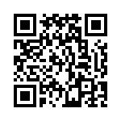

感谢您参与本次实验！
本次实验任务是自由观看一段3分钟的VR全景视频，在实验期间，我们将会收集您的眼动数据并录制屏幕。
在VR全景视频中，您可以通过鼠标左右拖动屏幕来改变主视角。
视频结束后需要您再扫码填写一份3分钟左右的问卷。
为了更准确地收集眼动数据，您需要进行眼动校准。
请点击下面的“开始校准”按钮进行校准，完成后请记下您的准确率并直接返回该网页。
并点击“我已完成校准，直接开始实验”按钮开始实验。
请点击“开始实验”按钮，然后观看视频。
点击后会有5秒准备时间。
请您点击录制整个屏幕并共享后静坐5秒，实验视频会自动播放。
请将您的眼动数据和屏幕录制视频发给主试。
并请您扫描以下问卷二维码。
感谢您的参与！
